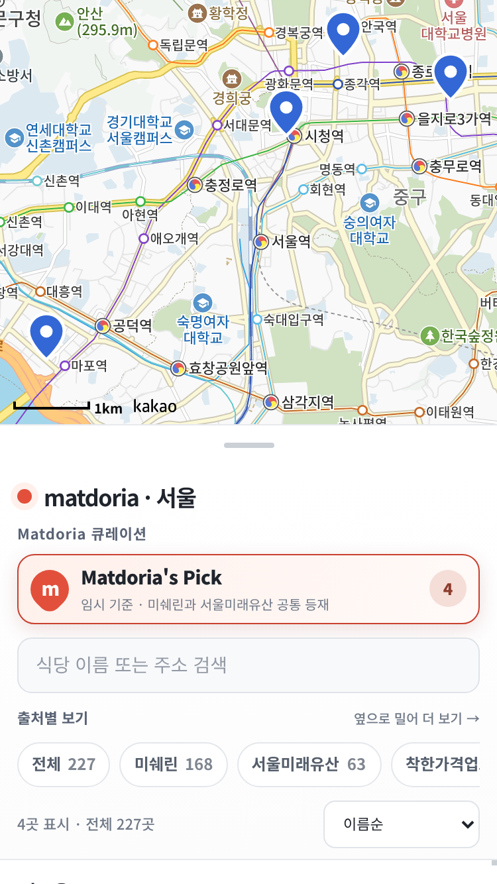
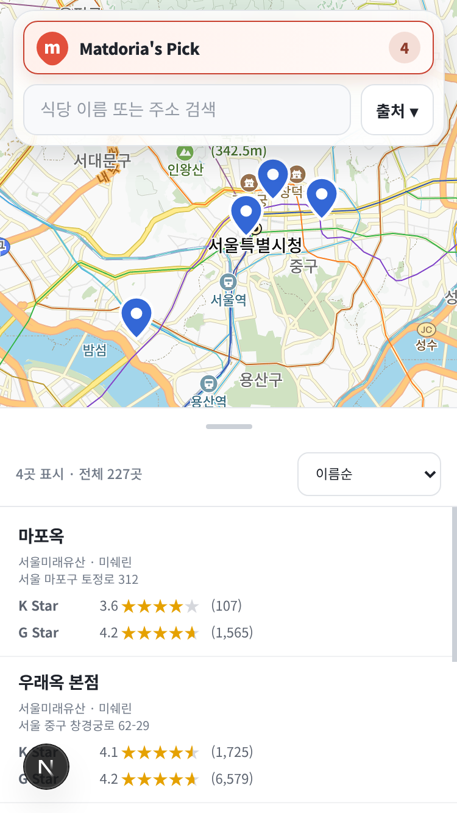
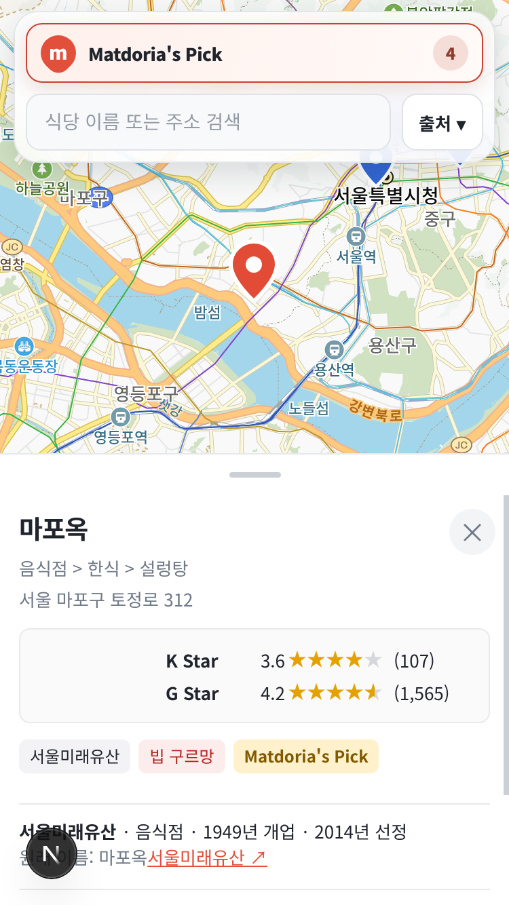
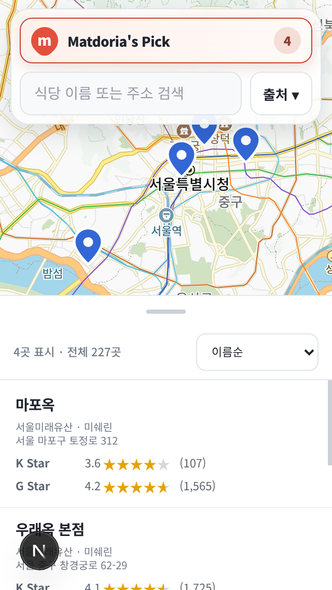
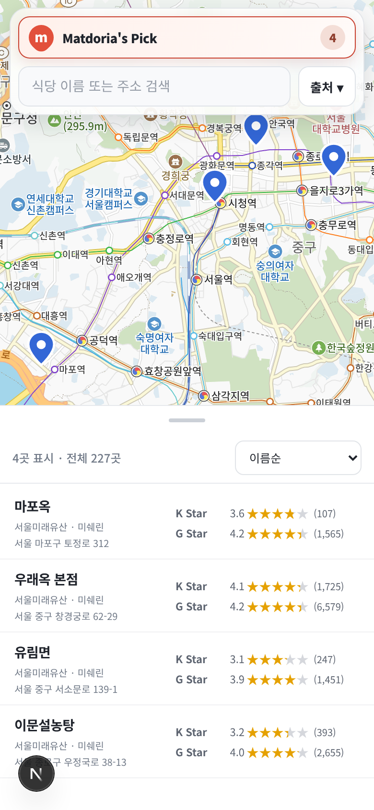
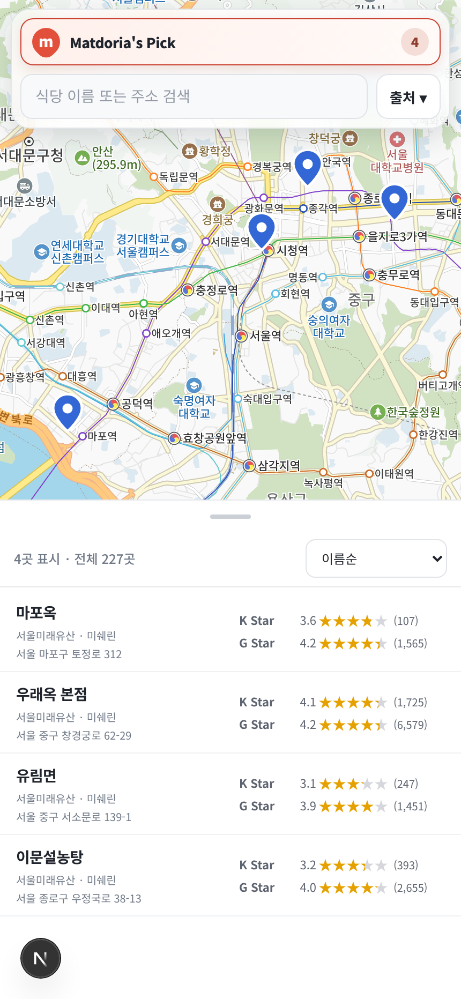

MATDORIA · MOBILE PRODUCT REVIEW
모바일 UI 리디자인
검색과 주요 메뉴를 지도 위쪽의 floating overlay로 옮기고, 지도는 화면 전체에 이어지게 했습니다. 리스트와 선택 상세는 아래쪽 sheet가 겹쳐 표시합니다.
이 패턴은 보통 full-bleed map with floating overlay controls 또는 floating search bar over a full-screen map이라고 부릅니다.
Before / After · 375×667 · 기본 split


격리 검증 서버 localhost:3100에서는 Kakao 키 도메인 제한으로 타일이 로드되지 않았지만, 이후 프로젝트 개발 서버를 재시작하고 허용 도메인인 localhost:3000에서 After 스크린샷을 다시 캡처했습니다. 최종 After 이미지에는 실제 지도 타일과 마커가 표시됩니다. E2E도 허용 도메인인 localhost:3000에서 재실행해 full-viewport 지도 캔버스와 패널/검색/터치 동작을 검증했습니다. 실 마커 터치와 split/peek 중 선택 핀의 가시 위치도 `npm run test:map`으로 자동 확인했습니다. 스크린샷 왼쪽 아래의 검은 N은 Next.js 개발 표시이며 프로덕션 UI에는 없습니다.
Before / After · 장소 상세


짧은 화면과 큰 화면



레이아웃 측정
Chrome DevTools Protocol 모바일 viewport에서 측정했습니다. 높이는 CSS pixel 기준이며 실기기 safe-area/브라우저 툴바는 emulation하지 않았습니다.
| Viewport | Before: sheet / list | After: sheet / list | Header | Map canvas |
|---|---|---|---|---|
| 320×568 | 273 / 15px | 284 / 202px | y=8–120 | 320×568 |
| 375×667 | 320 / 18px | 334 / 252px | y=8–120 | 375×667 |
| 390×844 | 405 / 110px | 422 / 340px | y=8–120 | 390×844 |
| 430×932 | 447 / 156px | 466 / 384px | y=8–120 | 430×932 |
320×568 split에서 출처 메뉴는 sheet handle과 최소 12px 간격을 두도록 제한되며, 메뉴 내부에서 스크롤됩니다.
구현한 동작
테스트 결과
npm run lint: 통과npm run test:unit: 6개 통과npx tsc --noEmit -p .: 통과npm run test:e2e: 76개 desktop/mobile geometry·interaction assertion 통과npm run test:map: 11개 통과. localhost:3000에서 실제 Kakao 마커 터치, 상세 이름 동기화, split/peek 구간 내 선택 핀 가시성을 확인했습니다.- Touch emulation suite: 49개 통과. Split↔peek↔expanded, source popover와 handle의 hit-test/drag, 320px split/expanded에서 메뉴가 handle을 가리지 않는지와 메뉴 내부 스크롤을 포함합니다. 320px expanded에서 발견한 popover/handle 겹침도 수정 후 재검증했습니다.
- Desktop regression: 900×800, 1024×768, 1280×800, 1440×900 세 상태의 pixel diff max channel 3/255.
검증 한계와 PM 판단
- 의도 부합: 상단 floating search/메뉴, 연속되는 full-screen 지도, 아래 목록/상세 sheet 구조가 구현됐고 4개 모바일 viewport에서 geometry와 조작을 검증했습니다. 기본 split에서 리스트 높이는 기존 15–156px에서 202–384px로 늘었습니다.
- 실제 지도: stale
.next청크 404를 내던 port 3000 개발 서버를 재시작한 뒤, 허용 도메인인localhost:3000에서 지도 타일과 마커가 After 캡처에 렌더링되는 것을 확인했습니다. projection과setBounds서명도 공식 Kakao 문서와 대조했습니다. 실제 마커 탭과 선택 핀 가시성은 `test:map`으로 localhost:3000에서 자동 확인했습니다. - 실기기: iOS safe-area, 모바일 브라우저 주소창 변화, 저사양 Android에서의 backdrop blur 비용은 실제 기기에서 확인해야 합니다.
관련 소스: web/app/page.tsx, web/app/globals.css, web/lib/mobileLayout.ts, web/components/KakaoMap.tsx, web/scripts/mobile-e2e.mjs.